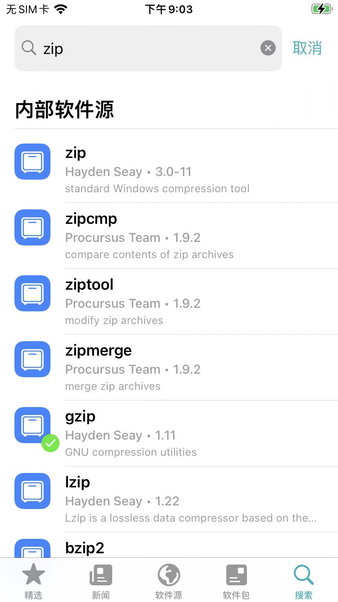
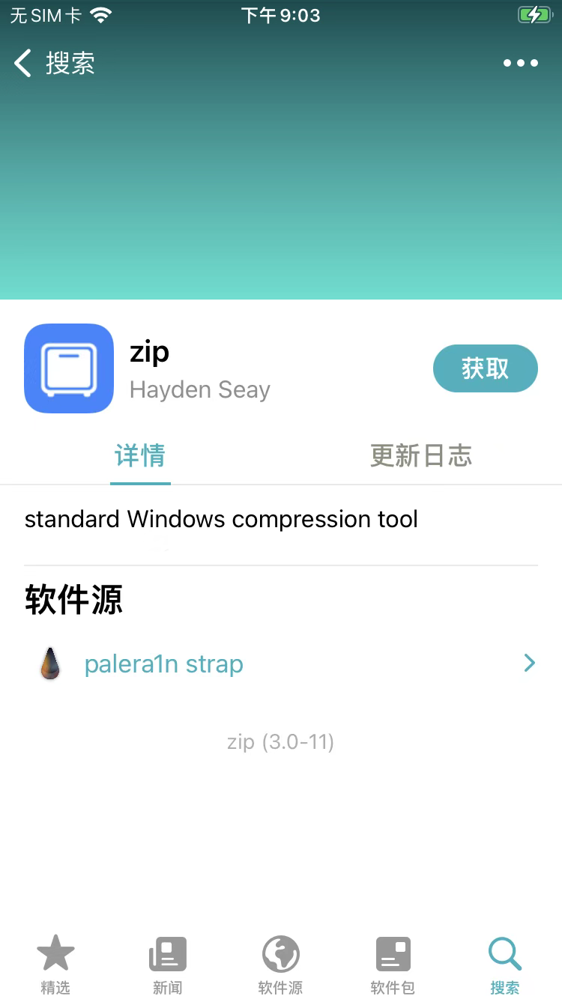
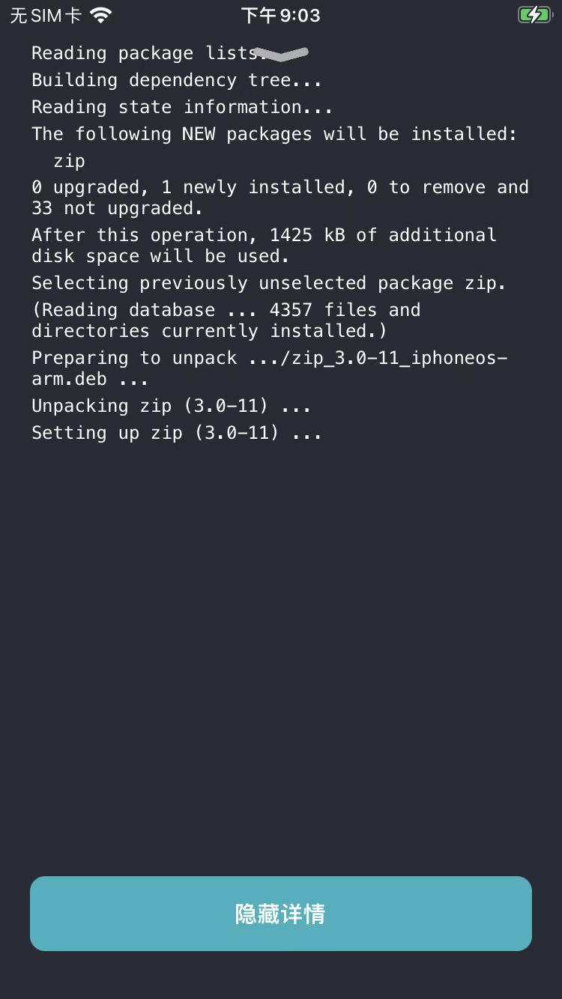

通过搜索并安装zip插件
此处以搜索并安装zip插件为例，来介绍典型的用Sileo安装插件的过程：
（在已安装对应的软件源的前提下），Sileo中切换到搜索页，输入：zip，可以搜到内部软件源中的zip：

点击zip，进入插件的详情页：

点击获取
此时会把此处要安装的插件，此处的zip，加到一个（此处的待安装）列表中
对应页面变化是：
底部会出现：
- 队列
- 1个软件包
- 1个软件包
点击队列，可以看到列表中的zip：
点击确认后，开始下载，下载完毕后，会自动安装
安装完毕后显示：
Installed zip (iphoneos-arm)
其中：
iphoneos-arm- 表示对应的版本=架构是：
arm
- 表示对应的版本=架构是：
如果想要查看详情的安装过程，可以点击显示详情

会列出整个的内部详细操作的log日志。
目的：
- 查看具体安装的deb包、插件版本号
- 万一安装有问题，可以及时发现（相关的警告⚠️和错误❌等信息）